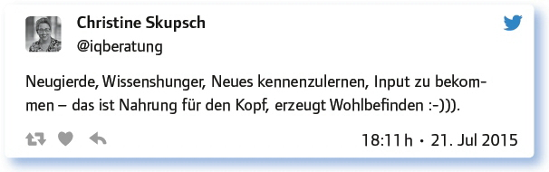
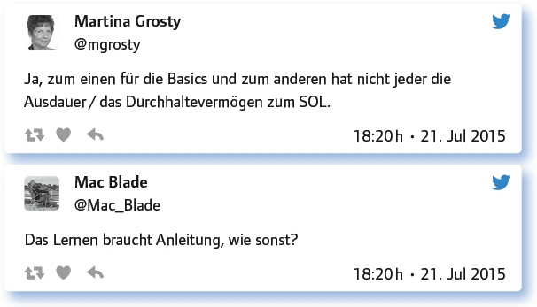
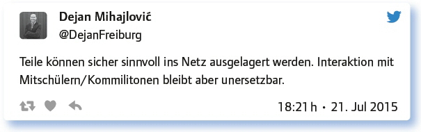

von Ines Bieler
John Dewey (1859–1952) schrieb in seinem Buch Democracy and Education (1916, 239): „Education is not preparation for life, education is life itself.“ Der US-amerikanische Philosoph und Pädagoge sieht den Zusammenhang zwischen Lernen und Leben also als Einheit. Ein Leben ohne Bildung ist nicht möglich. Leben bedeutet Bildung und umgekehrt.
Lebenslanges Lernen ist also ein natürlicher Prozess und nicht nur, aber besonders für Lehrer von Bedeutung.
Für Lehrer ist Lernen nicht nur auf ihre Schüler bezogen, sondern beinhaltet auch, sich selbst weiterzubilden und zu professionalisieren. Noch dazu müssen sie Schüler auf das lebenslange Lernen vorbereiten, ihnen also die Kompetenzen dafür vermitteln. Wie geht das überhaupt? Was ist hilfreich? Kann das Schule und wenn ja, mit welchen Mitteln?
Was ist Lebenslanges Lernen für dich?
Bei der ersten Frage sind sich alle Teilgeber einig.
Wer nicht mehr wissbegirig ist, hört auf zu leben. Ohne weiteres Lernen und Probieren wird es langweilig.
Lebenslanges Lernen ist für mich ein selbst gesetztes Ziel. Die Welt wird schneller und neue Entwicklungen will ich weiterhin verstehen können.
Lebenslanges Lernen ist für mich: Nie aufhören zu lernen, neue Quellen erschließen, Lernen nicht VERlernen.
Lifelong learning: For me, as long as I teach, trying to improve my teaching, trying new things, trying to motivate.
Lebenslanges Lernen heißt für mich, neugierig zu bleiben und Gewohnheiten immer wieder kritisch zu hinterfragen.
Neugierde in viele Richtungen. Offenheit für Neues …
Zu lebenslangem Lernen gehört die Offenheit, eigene Überzeugungen zu hinterfragen.
Die nächste Frage wurde dann schon konkreter und es wurden verschiedene Dinge benannt, die auf den Einzelnen motivierend beim Lernen wirken:
Was motiviert dich zum Lernen im Leben?

Aber auch:
So viel zur Theorie. Aber haben auch Orte etwas mit Lernen zu tun?
Welche Projekte, Institutionen oder anderen Lernorte für Lebenslanges Lernen kennst du oder nutzt du selbst?
„Lernen“ beinhaltet immer eine Reflektionsebene des „Gelernten“. Deswegen kann man nicht überall lernen.
Überwiegend Internet, speziell Twitter, YouTube, Wikipedia oder Fachseiten, bei sehr speziellen Themen auch Bücher und Zeitschriften.
Teilnahme an MOOCs: Spaß macht es, wenn es Möglichkeiten gibt, online etwas zusammen zu erarbeiten und im Netz zu präsentieren.
Ich netzwerke echt viel auf Tagungen usw., weil ich sehr gerne von anderen lerne und Gespräche bereichernd finde.
Ich nutze #EDchatDE und Fortbildungen, Workshops oder Kurse.
Die digitale Welt ermöglicht eine Vielzahl von Lernorten und vernetztes Arbeiten. Die Möglichkeiten, die die Technik bietet, kollaborativ zu arbeiten, werden von vielen Teilgebern genutzt. Besonders die Auswahl, die jeder nach seinen Bedürfnissen vornehmen kann, wird als positiv empfunden:
Man sucht sich die Themen zum Lernen aus und beginnt im Netz zu wandern.
Beispielsweise gestern an Hauswänden, Straßenschildern in Halle (Saale): http://t.co/vOSVCjSDyF
Dann liebe ich die Inspirata http://t.co/dVlSwsG5RH und das autodidaktische Zentrum http://t.co/Xl3I5XvTEg
Selbst bloggen und neue Inhalte erarbeiten hat für mich auch mit Lernen zu tun.
Daraus ergibt sich dann für Lehrer die Frage:
Braucht es noch eine „Schule/Universität“, wenn immer und überall gelernt werden kann?
Dies wird sehr eindeutig beantwortet:

@DejanFreiburg fasst es zusammen:

Das wirft die Frage auf, wie diese neuen Formen der Schule aussehen müssten. Dass sie gebraucht werden, ist unbestritten. Aber die althergebrachte Form wird angezweifelt.
Ja, es braucht Schulen mehr denn je … nur in einer anderen Form … als Curator, Filter, sich mit Gleichgesinnten aussprechen.
Anders gefragt: Braucht es DIESE Art von Schule, die an der Lebensrealität vorbeigeht? Nö.
Schule und Universität werden immer ein Ort der Bildung sein. Wahrscheinlich müssen sie sich aber transformieren.
Schulen wie wir sie jetzt kennen, wo Schüler sitzen und Sachen auswendig lernen und wiedergeben müssen, werden aussterben.
Weitere Vorschläge:
Es würde ein Forum brauchen, keine Schule mehr. Die SuS diskutieren und erarbeiten ein Thema kollaborativ und selbstständig.
MOOC kommen dem Ideal sehr nahe.
Unis könnten zu Zertifizierungs- und Forschungsstellen umgewandelt werden. Seminare gehen auch Online, im Park etc.
Antworte auf 3 Tweets unterschiedlicher Teilgeber a) zustimmend, b) kritisch, c) provozierend!
Da wir aber in gegebene Strukturen des Bildungssystems eingebunden sind, müssen diese auch genutzt werden.
Wie kann Schule auf lebenslanges Lernen vorbereiten? Welche Tipps hast du?
Aus der Schule raus – ins digitale Berufsleben rein.
Welche Rolle spielt lebenslanges Lernen im Berufsleben im digitalen Zeitalter? (Außer bei Lehrern)
Angesichts der Veränderungen/Herausforderungen des digitalen Zeitalters gehört Lebenslanges Lernen zur Überlebensstrategie.
… die Bedeutungsvollste, sonst wären wir alle nicht gerade hier :-).
http://t.co/JVlliUCxhi – Die Arbeitswelt wird sich ändern und nur durch LLL wirst du nicht abgehängt.
Man musste sich nach jeder Ausbildung/jedem Studium immer schon weiterbilden. Durch Digitalisierung noch mehr/häufiger.
Lebenslanges Lernen geht nicht mehr vom Wissen des Lehrers aus. Er motiviert, inspiriert und zeigt Techniken, die Wissen abrufen.
Diese letzte Äußerung fasst die Bedeutung des lebenslangen Lernens zusammen und zeigt auf, dass Schule dabei eine entscheidende Rolle spielt.
Link zum vollständigen Protokoll: